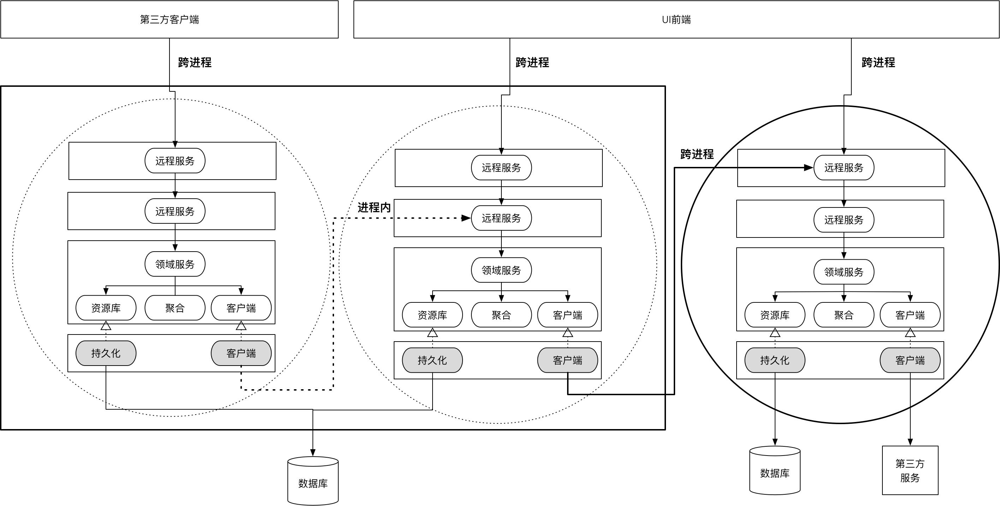
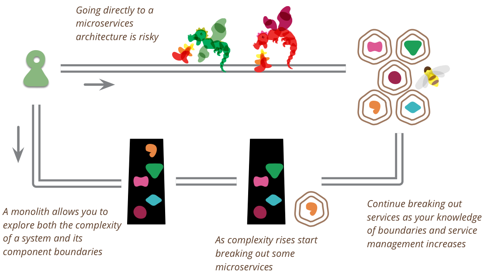

- 001 「战略篇」访谈 DDD 和微服务是什么关系？.md.html
- 002 「战略篇」开篇词：领域驱动设计，重焕青春的设计经典.md.html
- 003 领域驱动设计概览.md.html
- 004 深入分析软件的复杂度.md.html
- 005 控制软件复杂度的原则.md.html
- 006 领域驱动设计对软件复杂度的应对（上）.md.html
- 007 领域驱动设计对软件复杂度的应对（下）.md.html
- 008 软件开发团队的沟通与协作.md.html
- 009 运用领域场景分析提炼领域知识（上）.md.html
- 010 运用领域场景分析提炼领域知识（下）.md.html
- 011 建立统一语言.md.html
- 012 理解限界上下文.md.html
- 013 限界上下文的控制力（上）.md.html
- 014 限界上下文的控制力（下）.md.html
- 015 识别限界上下文（上）.md.html
- 016 识别限界上下文（下）.md.html
- 017 理解上下文映射.md.html
- 018 上下文映射的团队协作模式.md.html
- 019 上下文映射的通信集成模式.md.html
- 020 辨别限界上下文的协作关系（上）.md.html
- 021 辨别限界上下文的协作关系（下）.md.html
- 022 认识分层架构.md.html
- 023 分层架构的演化.md.html
- 024 领域驱动架构的演进.md.html
- 025 案例 层次的职责与协作关系（图文篇）.md.html
- 026 限界上下文与架构.md.html
- 027 限界上下文对架构的影响.md.html
- 028 领域驱动设计的代码模型.md.html
- 029 代码模型的架构决策.md.html
- 030 实践 先启阶段的需求分析.md.html
- 031 实践 先启阶段的领域场景分析（上）.md.html
- 032 实践 先启阶段的领域场景分析（下）.md.html
- 033 实践 识别限界上下文.md.html
- 034 实践 确定限界上下文的协作关系.md.html
- 035 实践 EAS 的整体架构.md.html
- 036 「战术篇」访谈：DDD 能帮开发团队提高设计水平吗？.md.html
- 037 「战术篇」开篇词：领域驱动设计的不确定性.md.html
- 038 什么是模型.md.html
- 039 数据分析模型.md.html
- 040 数据设计模型.md.html
- 041 数据模型与对象模型.md.html
- 042 数据实现模型.md.html
- 043 案例 培训管理系统.md.html
- 044 服务资源模型.md.html
- 045 服务行为模型.md.html
- 046 服务设计模型.md.html
- 047 领域模型驱动设计.md.html
- 048 领域实现模型.md.html
- 049 理解领域模型.md.html
- 050 领域模型与结构范式.md.html
- 051 领域模型与对象范式（上）.md.html
- 052 领域模型与对象范式（中）.md.html
- 053 领域模型与对象范式（下）.md.html
- 054 领域模型与函数范式.md.html
- 055 领域驱动分层架构与对象模型.md.html
- 056 统一语言与领域分析模型.md.html
- 057 精炼领域分析模型.md.html
- 058 彩色 UML 与彩色建模.md.html
- 059 四色建模法.md.html
- 060 案例 订单核心流程的四色建模.md.html
- 061 事件风暴与业务全景探索.md.html
- 062 事件风暴与领域分析建模.md.html
- 063 案例 订单核心流程的事件风暴.md.html
- 064 表达领域设计模型.md.html
- 065 实体.md.html
- 066 值对象.md.html
- 067 对象图与聚合.md.html
- 068 聚合设计原则.md.html
- 069 聚合之间的关系.md.html
- 070 聚合的设计过程.md.html
- 071 案例 培训领域模型的聚合设计.md.html
- 072 领域模型对象的生命周期-工厂.md.html
- 073 领域模型对象的生命周期-资源库.md.html
- 074 领域服务.md.html
- 075 案例 领域设计模型的价值.md.html
- 076 应用服务.md.html
- 077 场景的设计驱动力.md.html
- 078 案例 薪资管理系统的场景驱动设计.md.html
- 079 场景驱动设计与 DCI 模式.md.html
- 080 领域事件.md.html
- 081 发布者—订阅者模式.md.html
- 082 事件溯源模式.md.html
- 083 测试优先的领域实现建模.md.html
- 084 深入理解简单设计.md.html
- 085 案例 薪资管理系统的测试驱动开发（上）.md.html
- 086 案例 薪资管理系统的测试驱动开发（下）.md.html
- 087 对象关系映射（上）.md.html
- 088 对象关系映射（下）.md.html
- 089 领域模型与数据模型.md.html
- 090 领域驱动设计对持久化的影响.md.html
- 091 领域驱动设计体系.md.html
- 092 子领域与限界上下文.md.html
- 093 限界上下文的边界与协作.md.html
- 094 限界上下文之间的分布式通信.md.html
- 095 命令查询职责分离.md.html
- 096 分布式柔性事务.md.html
- 097 设计概念的统一语言.md.html
- 098 模型对象.md.html
- 099 领域驱动设计参考过程模型.md.html
- 100 领域驱动设计的精髓.md.html
- 101 实践 员工上下文的领域建模.md.html
- 102 实践 考勤上下文的领域建模.md.html
- 103 实践 项目上下文的领域建模.md.html
- 104 实践 培训上下文的业务需求.md.html
- 105 实践 培训上下文的领域分析建模.md.html
- 106 实践 培训上下文的领域设计建模.md.html
- 107 实践 培训上下文的领域实现建模.md.html
- 108 实践 EAS 系统的代码模型.md.html
- 109 后记：如何学习领域驱动设计.md.html
093 限界上下文的边界与协作
限界上下文的边界与协作
在领域驱动设计魔方的宏观层次中，之所以需要对技术风险进行识别和评估，在于它会影响架构风格的选择。一个典型的架构风格决策是在单体架构与微服务架构之间选择。由于领域驱动设计的限界上下文主要由业务范围边界来决定，理论上讲，只要维持好限界上下文的边界，选择单体架构还是微服务架构，不应对系统的领域模型产生影响。作为战略设计的核心要素，限界上下文的设计质量会直接影响到整个系统架构的质量，因而对它的考量尤其显得重要。
限界上下文之间的协作
每个限界上下文内部都是一个相对独立而自治的空间，在这个空间内，只要你确保边界的稳定性，并规划好对外公开的稳定接口，边界内部究竟做出怎样的设计决策，其实是无所谓的。但要确保限界上下文的稳定并不容易，倘若上下文内的领域逻辑较为复杂，通常还是建议遵循领域驱动设计分层架构的风格，严格按照领域模型驱动设计的过程对领域进行建模。限界上下文的内部架构同样需要遵循整洁架构思想。
在采用前后端分离的架构中，通常不会将前端纳入到限界上下文的范畴。限界上下文暴露给外部的服务接口包括：
- 基础设施层的远程服务
- 应用层的应用服务
远程服务是为跨进程通信定义的外部服务，本质上属于北向网关，遵循了上下文映射的开放主机服务（Open Host Service，OHS）模式。根据通信协议和消费者的差异，远程服务又分为资源（Resource）服务、供应者（Provider）服务和控制器（Controller）服务。资源与供应者服务的定义受到通信协议的影响，而控制器服务则是因为它主要面向前端视图的消费请求，满足 MVC 模式。
应用服务同样可以作为限界上下文的外部服务。由于它是对领域模型的一层包装，故而在概念归属上仍然属于限界上下文中表达领域的组成部分，并不属于提供了技术实现的基础设施层。应用服务不具备跨进程通信的能力，这就决定了它的调用者必须与它处于同一个进程，依赖的方式可以是代码依赖，也可以是二进制依赖，但在运行时，却处于同一个进程的内存空间。
显然，远程服务和应用服务的作用各不相同，前者面向进程外通信，后者面向进程内通信。对于进程内的限界上下文协作而言，为避免不必要的网络通信，下游限界上下文应调用上游限界上下文的应用服务，而非远程服务。如果两个限界上下文分别作为独立的微服务，它们之间的协作则通过远程服务来完成：

即便系统采用单体架构，由于大多数限界上下文还需要面对前端视图的调用，为其定义远程服务仍有必要；倘若采用了微服务架构，并不意味着每个限界上下文都是微服务，某些限界上下文会以代码库的方式被微服务重用，故而为微服务上下文保留应用服务亦有必要。更何况，限界上下文的边界总存在不确定性，正所谓“分久必合，合久必分”，限界上下文的边界在进程内外发生调整，亦是常有的事儿，因此有必要在上下文内部同时保留远程服务与应用服务。当然，在一些简单架构下，将应用层和基础设施层中的远程服务合二为一，可以减少不必要的间接层次，算是一种例外的选择。
外部服务接口的定义
当一个限界上下文可能存在两种不同的服务向外部暴露时，面对外部的调用者，究竟该如何设计服务接口呢？遵循面向接口设计的原则，我们需要站在调用者的角度去思考接口的定义。外部服务接口的调用者通常包括：
- 前端 UI 视图
- 第三方客户端
- 下游限界上下文
前端UI视图和第三方客户端必须通过跨进程的通信方式才能调用外部服务，毫无疑问，对于这样的调用者，是不可能暴露当前限界上下文内部的领域模型对象的。若下游限界上下文在进程边界之外，也当如此。因此，远程服务的接口定义必须采用消息契约对象（即数据传输对象 DTO），当为确定无疑的事实。
相对而言，应用服务面向进程内的调用者，则有两种选择：领域模型对象或消息契约对象。以查询订单和下订单为例，比较如下接口定义：
// 定义为领域模型对象
public class OrderAppService {
public List<Order> customerOrders(String customerId) {}
public void placeOrder(Order order) {}
}
// 定义为消息契约对象
public class OrderAppService {
public List<OrderResponse> customerOrders(String customerId) {}
public void placeOrder(PlacingOrderRequest orderRequest) {}
}
当应用服务的接口定义为领域模型对象时，应用服务承担的职责更少，因为它无需负责对输入参数与返回值的转换，调用领域服务变得更加惬意。随之而来的问题是这样的接口会泄露位于内部核心的领域模型。它存在一种风险，当下游限界上下文没有通过防腐层（Anticorruption Layer，ACL）调用该接口时，就会产生下游对上游领域模型的依赖，形成遵奉者（Conformist）。
即使应用服务无需承担模型对象之间的转换逻辑，并不意味着限界上下文就能免去这一职责，不过是将该职责“转嫁”给了远程服务罢了。由于应用服务接口往往体现了具有业务价值的完整业务用例，细粒度的领域模型对象未必能够满足下游限界上下文调用者的意愿；更何况，模型对象之间的转换总会包含一部分领域逻辑，让位于基础设施层的远程服务来做这件事情，似有职责分配失当之嫌。两相比较，我更倾向于应用服务接口定义为消息契约对象，并将领域模型对象与消息契约对象之间的转换“留”在应用层。
如 1-18 课《领域驱动分层架构与对象模型》总结的那样，消息契约对象可以分为请求（Request）消息和响应（Response）消息。它们与远程服务对象共同组成了服务对象模型：
为了表达请求消息的调用行为，我建议以动名词短语结合 Request 后缀的形式定义请求消息对象，除非这些请求消息可以由简单的内建类型来表达。以 Spring Boot 为例，在执行 GET 动作时，如果请求消息通过 @RequestParam 或者 @PathVariable 定义，不妨就直接暴露该参数的类型，否则就应该定义专有的请求对象，如下订单请求的 PlacingOrderRequest。
对于响应消息，命令结果往往包含执行成功或失败的标识，如果希望以更丰富的结果对象表达，则可以定义为包含了请求动词的响应对象，如 DeletionResultResponse。视图模型和数据契约分别面向 UI 客户端和非UI客户端，可以根据对应的数据模型进行命名，以订单为例，就可以分别命名为 OrderViewResponse 和 OrderResponse。如果返回的视图模型和数据契约为集合，除非该集合自身也具有业务含义，否则可以直接使用语言提供的集合类型，如 List
若消息契约对象定义在应用层，切忌引入对外部框架的依赖。例如，对于命令请求而言，REST 服务要求返回标准的状态码，一些 REST 框架如 Spring Boot 定义了自己的状态码，如 HttpStatus.NOT_FOUND，这样的状态码就不应该定义在消息契约对象中。可以通过自定义的错误码，或者定义不同类型的 ApplicationException 来传递这些状态信息。远程服务在调用了应用服务之后，可以由其自行处理。
按照整洁架构思想，处于外层的远程服务可以调用内层的应用服务，为了减少不必要的转换工作，远程服务的接口定义应尽可能与应用服务保持一致。例如下订单接口，都应该形如：
public void placeOrder(PlacingOrderRequest orderRequest) {}
不同之处在于远程服务还需要耦合跨进程的通信框架，如 Spring Boot、Dubbo 等。由于牵涉到分布式通信，远程服务的接口会受到这些框架的限制，选择不同的框架，远程服务的接口定义就可能呈现不同的面貌，远程服务与应用服务之间的关系也会发生改变。这部分内容在下一篇《限界上下文之间的分布式通信》深入介绍。
领域模型对象与消息契约对象的转换
领域模型对象与消息契约对象之间的转换可以基于“信息专家模式”，优先考虑将转换行为分配给消息契约对象，因为它最了解自己的数据结构。相反，领域模型对象处于分层的内部核心，它是不应该知道消息契约对象的。由于请求消息是自外向内传递，需要将自身转换为领域模型对象，故而定义为实例方法；响应消息是自内向外传递，需要通过获得的领域模型对象创建自身的实例，故而定义为静态方法（在 Scala 中，可以利用扩展方法在应用层为领域模型对象定义扩展方法，调用者在调用该转换方法时，更像是领域模型对象拥有的实例方法）：
package com.ecommerce.ordercontext.application.message;
public class PlacingOrderRequest {
public Order toOrder() {}
}
package com.ecommerce.ordercontext.application.message;
public class OrderResponse {
public static OrderResponse of(Order order) {}
}
这样的消息契约对象都定义在应用层。
领域模型对象往往以聚合为单位。根据聚合的设计原则，聚合之间往往通过 ID 进行关联。一旦返回的响应消息对象需要组装多个聚合时，组装逻辑就会变得更加复杂，甚至需要通过南向网关访问如数据库之类的外部资源。例如，当 Order 聚合的 OrderItem 仅持有 productId 时，如果客户端执行查询请求时，希望返回具有产品信息的订单，就需要在组装 OrderResponse 消息对象时，通过 ProductAppServiceClient 与 productId 获得产品的信息。这时，消息契约对象就无法履行转换模型对象的职责，需要交给专门的装配器，如 OrderResponseAssembler：
package com.ecommerce.ordercontext.application.message;
public class OrderResponseAssembler {
private ProductAppServiceClient productClient;
public OrderResponse of(Order order) {
OrderResponse orderResponse = OrderResponse.of(order);
orderResponse.addAll(compose(order));
return orderResponse;
}
private List<OrderItemResponse> compose(Order order) {
Map<String, ProductResponse> orderIdToProduct = retrieveProducts(order);
return order.getOrderItems.stream()
.map(oi ->compose(oi, orderIdToProduct))
.collect(Collectors.toList());
}
private Map<String, ProductResponse> retrieveProducts(Order order) {
List<String> productIds = order.items().stream.map(i -> i.productId()).collect(Collectors.toList());
return productClient.allProductsBy(productIds);
}
private OrderItemResponse compose(OrderItem orderItem, Map<String, ProductResponse> orderIdToProduct) {
ProductResponse product = orderIdToProduct.get(orderItem.getProductId());
return OrderItemResponse.of(orderItem, product);
}
}
这一模型对象转换场景也充分证明了将消息契约对象定义在应用层要更加合理，因为基础设施层的远程服务不应该承担这样具有一定业务意义的转换职责。
限界上下文边界的变化
无论采用单体架构还是微服务架构，都不能斩钉截铁地规定限界上下文的边界必须是或者不是跨进程通信。换言之，每个属于进程内边界的限界上下文都有可能在将来被设计为微服务。因此，我们需要谨慎地维护好限界上下文的边界。当一个限界上下文作为下游调用上游的限界上下文时，导致依赖的原因包括：
- 服务接口的定义
- 服务传递的消息契约对象
隔离对上游服务依赖的解决方案就是防腐层。方法是在防腐层定义属于自己的接口，使该接口变为当前限界上下文可控。虽然消息契约对象已经做到了对领域模型对象的隔离，但为了保证下游上下文的独立性，仍然需要将上游服务传递的消息契约对象转换为自己上下文的领域模型对象。这样就能避免将上游的服务接口与消息契约对象渗透到下游限界上下文的领域层中。故而防腐层的职责就包括：
- 接口的抽象
- 接口的适配
- 消息契约对象与领域模型对象的转换
以订单上下文调用库存上下文为例。假设上游库存上下文的应用服务定义如下：
package com.ecommerce.inventorycontext.application;
public class InventoryAppService {
public InventoryResponse checkInventory(CheckingInventoryRequest inventoryRequest) {}
}
对检查库存服务的调用发生在订单上下文的领域服务中：
package com.ecommerce.ordercontext.application;
public class OrderService {
private OrderRespository orderRepo;
// 使用防腐层的抽象接口
private InventoryClient inventoryClient;
public void place(Order order) {
order.validate();
if (!inventoryClient.isAvailable(order)) {
throw new NotEnoughInventoryException();
}
orderRepo.save(order);
}
}
InventoryAppServiceClient 接口定义在南向网关的抽象中，本质上属于领域层，因而可以直接调用当前上下文的领域模型对象：
package com.ecommerce.ordercontext.interfaces.client;
public interface InventoryClient {
boolean isAvailable(Order order);
}
在基础设施层的防腐层实现中，可以直接调用同进程中的库存上下文的应用服务：
package com.ecommerce.ordercontext.gateway.client;
public class InventoryServiceClient implements InventoryClient {
// 直接依赖库存上下文的应用服务
private InventoryAppService inventoryService;
public boolean isAvailable(Order order) {
// 直接使用库存上下文的请求消息对象
CheckingInventoryRequest request = new CheckingInventoryRequest();
for (OrderItem orderItem : order.items()) {
request.add(orderItem.productId(), orderItem.quantity());
}
// 直接使用库存上下文的响应消息对象
InventoryResponse response = inventoryService.checkInventory(request);
// 返回的值不再包含库存上下文的消息契约对象
return response.hasError() ? false : true;
}
}
订单上下文的应用服务就可以直接调用领域服务：
package com.ecommerce.ordercontext.application;
public class OrderAppService {
private OrderService orderService;
@Transactional
public void placeOrder(PlacingOrderRequest orderRequest) {
try {
Order order = orderReuest.toOrder();
orderService.placeOrder(order);
} catch (NotEnoughInventoryException | InvalidOrderException ex) {
throw new ApplicationException(ex.getMessage());
}
}
}
由于领域服务 OrderService 已经封装了提交订单的领域逻辑，应用服务 OrderAppService 要履行的职责就只包含三方面内容：
- 组合横切关注点，如第 6 行代码的事务处理，第 8 行到 13 行的异常处理
- 调用消息契约对象或者装配器的转换方法，将消息契约对象转换为领域模型对象
- 调用领域服务的领域行为
在作为下游的订单上下文中，除了 InventoryAppServiceClient 知道 InventoryAppService 应用服务及对应的消息契约对象之外，领域层包括应用层的其余代码若需要检查库存，都应调用属于防腐层的 InventoryClient 接口，从而隔离对上游库存上下文的依赖。当订单上下文与库存上下文之间的关系由进程内通信迁移为跨进程通信，即采用微服务架构风格时，只需要修改位于下游订单上下文基础设施层的 InventoryAppServiceClient 实现，保证了领域层的稳定性，将这一迁移带来的影响降到了最低。倘若还能在领域层严格遵循领域驱动战术设计的要求，做到领域模型与数据模型的隔离，降低风格迁移导致的数据库修改的成本，那么从单体架构向微服务架构的迁移就会变得相对容易。
Martin Fowler 在 MonolithFirst 文章中谈到了将软件系统直接设计为微服务架构的担忧，如下图所示：

他给出的主要理由就是，设计者无法从一开始就确定稳定的微服务边界。一旦系统被设计为微服务，当微服务边界存在不合理之处时，对它的重构难度要远远大于单体架构。因此，他的建议是单体架构优先，通过该架构风格逐步探索系统的复杂度，确定限界上下文构成组件的边界（Component Boundaries），待系统复杂度增加证明了微服务的必要性时，再考虑将这些限界上下文设计为独立的微服务。倘若采用这样的架构演化路径，则如上所述的领域驱动设计实践就可以减低从单体架构迁移到微服务架构的成本，围绕着限界上下文设计架构，就要比直接围绕微服务进行设计要更加地稳健，是满足敏捷设计原则 YAGNI（You Aren't Gonna Need It）的正确选择。